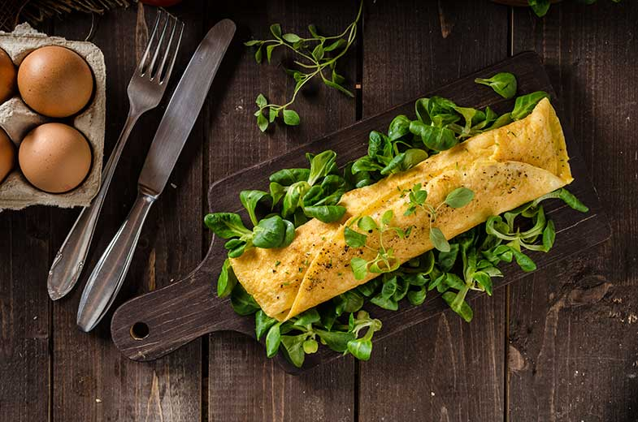

Recetas de Cocina

Desayuno |

Almuerzo |

Cena |
|---|
REGISTRO
MÉXICO Y SU CONSUMO DE ATÚN
- El consumo de atún y mariscos se incrementó en un 30% en los últimos 5 años.
- Se estima que en 30 años incremente la ingesta a nivel global y que el consumo de atún sea mayor al de otras proteínas, como el porcino, vacuno y aves.
- El atún se ha posicionado como uno de los productos más accesibles por su valor nutritivo y precio para el consumidor.
- En México, se consumen más de 180 mil latas anualmente.
ARROZ EN PANAMÁ
El arroz con pollo es un plato típico de España y América Latina1 con variaciones regionales según el país. Consiste en arroz cocinado con pollo, en presas o desmechado, verduras (ají pimentón, zanahoria en cubos, apio, habichuelas, cebolla, maíz desgranado, aceitunas, arvejas, alcaparras), y sazonado con especias (laurel, tomillo, cilantro, ajo)